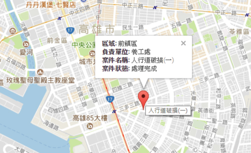
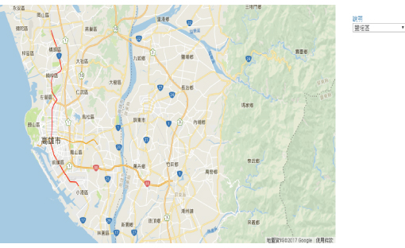

Map 1999
本網站可以查詢高雄市各區域的1999市民通報專線的案件資料。以Open1999派工受理案件資料做為主要資料來源。
操作說明
- 使用者選擇任一區域後，便會出現該區域1999通報案件。
- 若地圖上沒出現marker，表示該區域尚未有通報案件，或者是該案件尚未有經緯度以致還無法定位。


作品分享
- GitHub: https://github.com/clingoram/Map1999
- Demo: https://clingoram.github.io/Map1999/index.html
- 其他資訊:
- GitHub
- Blog
作品聲明
重點整理
- 本網站是藉由Google Maps JavaScript API 的地圖服務，以及Open1999派工受理案件的資料所實作出的地圖!
- 基本上是用 Google Maps API內的: Map、Infowindow、Marker還有ajax JSON所創造而成的。